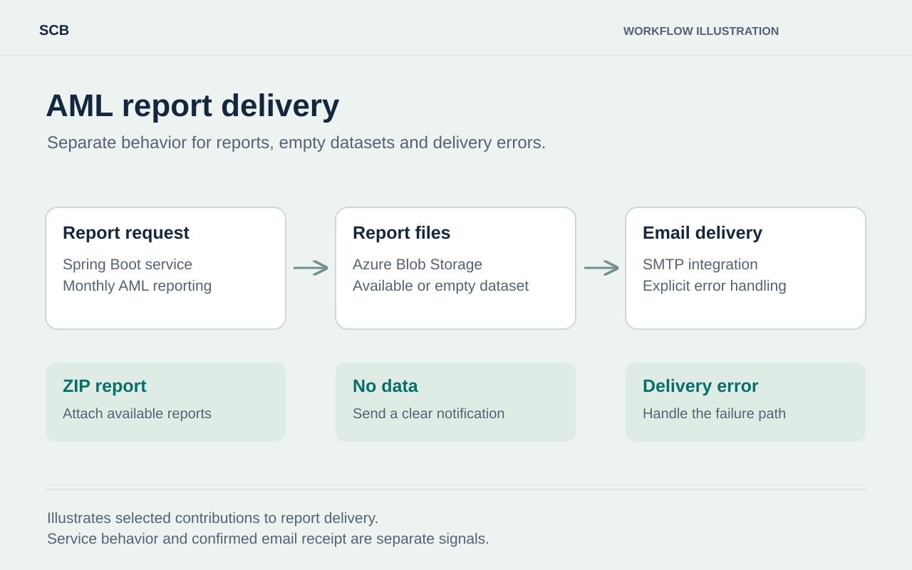
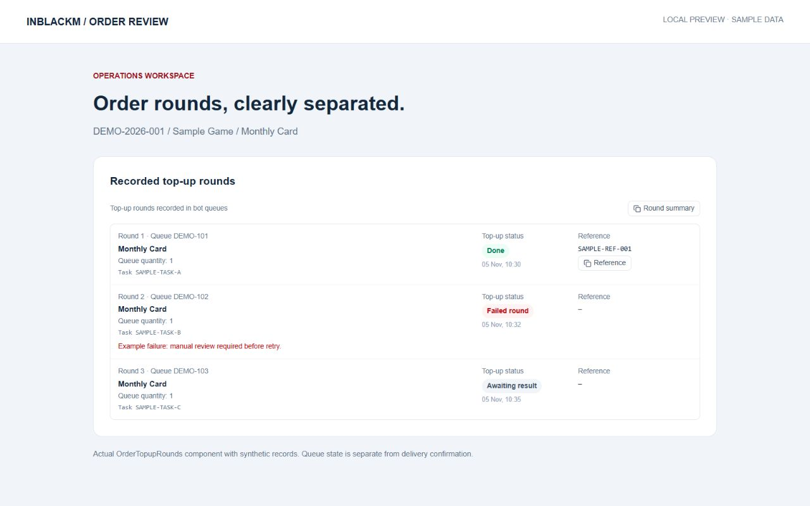
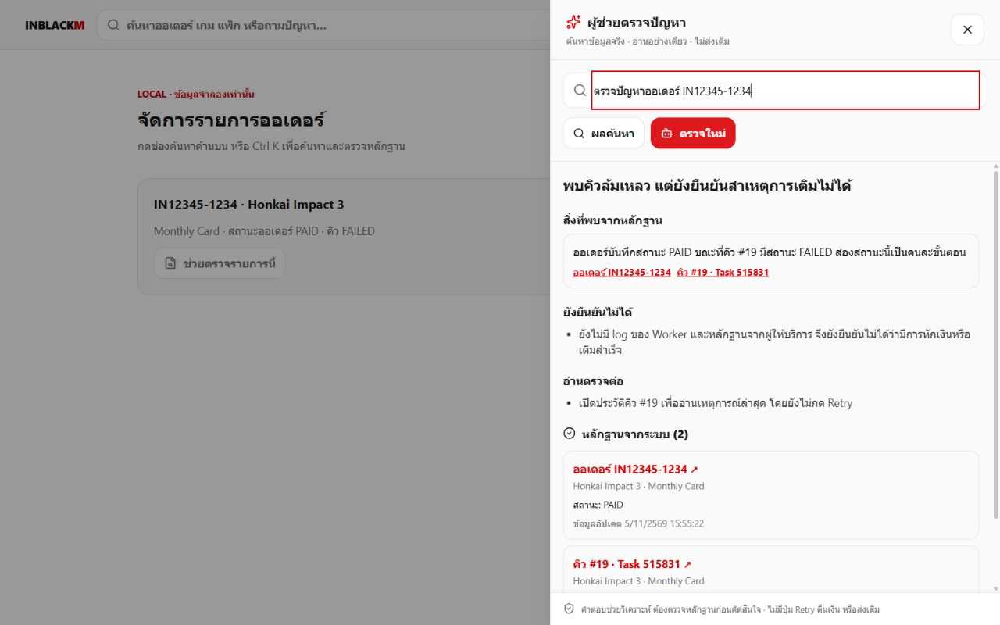

SCB via Extend IT
Report delivery, with explicit outcomes
Spring Boot, Azure Blob Storage and SMTP. Handling ZIP reports, empty datasets and delivery failures.
Open the caseInterview mode
Start with the highlights, walk through the short deck, then explore the work and resume at your own pace.
Step 1 of 4 · Career film
Choose English or ไทย inside the player, then press Play. Moving to another step pauses the film.
Seven slides for a focused conversation. Use the slide arrows or choose All slides to jump.

SCB via Extend IT
Spring Boot, Azure Blob Storage and SMTP. Handling ZIP reports, empty datasets and delivery failures.
Open the case
InblackM · Part-time
Order review screens and transactional handover rules that keep source and queue records consistent.
Open the case
InblackM · AI integration
Bounded evidence retrieval, structured response validation and a search fallback in a read-only implementation.
Open the caseSCB visual: workflow illustration. InblackM visuals: actual interface components with sample data.